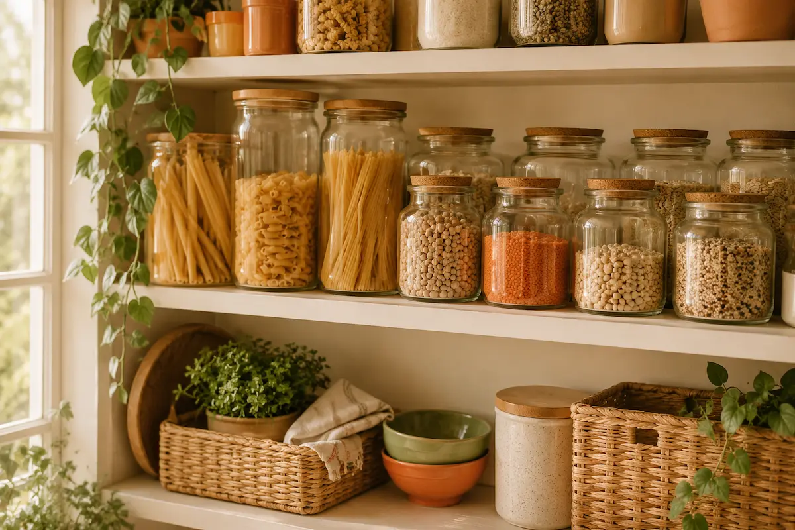

Como Organizar sua Despensa e Geladeira
Uma despensa e geladeira bem organizadas economizam tempo, dinheiro e evitam aquele susto de achar um ingrediente vencido escondido no fundo. Com pouco esforço, dá pra transformar sua rotina na cozinha.
Regras de Ouro
- Etiquete tudo com a data de compra ou validade.
- Use o sistema "primeiro que entra, primeiro que sai": potes mais antigos sempre na frente.
- Separe por categorias (grãos, enlatados, temperos) pra facilitar achar o que precisa.
Na Despensa
- Use potes transparentes pra grãos e farinhas — facilita ver o que está acabando.
- Guarde temperos longe do fogão e da luz direta, pra durarem mais.
- Mantenha uma listinha fixa na porta com o que precisa repor.
Na Geladeira
- Prateleiras de cima: itens prontos pra consumo, como queijos, embutidos e sobras.
- Prateleiras de baixo (mais frias): carnes e peixes crus, sempre em recipientes fechados.
- Gavetas: frutas e verduras — evite misturar tudo no mesmo compartimento, algumas liberam gases que estragam as outras.
- Porta: só itens que aguentam variação de temperatura, como molhos e bebidas.
Reserve um momento por semana pra dar uma olhada na despensa e na geladeira antes de ir ao mercado — assim você evita comprar o que já tem em casa!
Veja também: Cozinhando para Uma ou Duas Pessoas